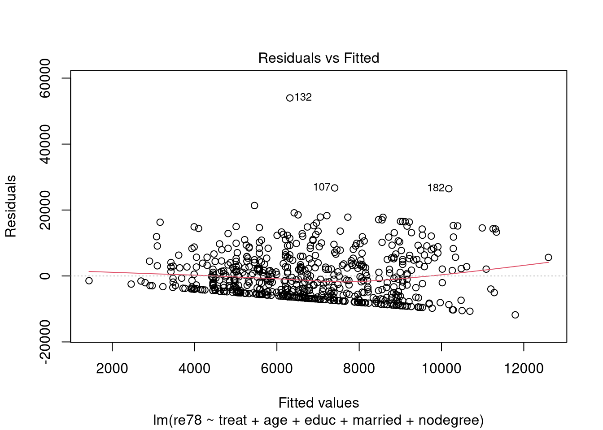

Looking at the summary output below, the columns age, nodegree, married, re74, and re75 appear the most unbalanced. Really, the only balanced characteristic is educ.
m =matchit(treat ~ age + educ + married + nodegree + re74 + re75,data = data,method =NULL,distance ="glm") summary(m)
Call:
matchit(formula = treat ~ age + educ + married + nodegree + re74 +
re75, data = data, method = NULL, distance = "glm")
Summary of Balance for All Data:
Means Treated Means Control Std. Mean Diff. Var. Ratio eCDF Mean
distance 0.3951 0.2609 0.9490 0.7550 0.2314
age 25.8162 28.0303 -0.3094 0.4400 0.0813
educ 10.3459 10.2354 0.0550 0.4959 0.0347
married 0.1892 0.5128 -0.8263 . 0.3236
nodegree 0.7081 0.5967 0.2450 . 0.1114
re74 2095.5737 5619.2365 -0.7211 0.5181 0.2248
re75 1532.0553 2466.4844 -0.2903 0.9563 0.1342
eCDF Max
distance 0.3700
age 0.1577
educ 0.1114
married 0.3236
nodegree 0.1114
re74 0.4470
re75 0.2876
Sample Sizes:
Control Treated
All 429 185
Matched 429 185
Unmatched 0 0
Discarded 0 0
Q2)
Looking at the initial fit of the model, we see evidence of heteroskedasticity and maybe slight deviance from normality in the QQ plot. The deviance from normality is probably less of a concern, but the errors fan out pretty significantly and have structure.
However, we can’t use log transforms on most of the variables since they’re either binary or contain 0 values. However, removing the variables re74 and re75 seem to help in removing structure in the residuals. I imagine the high number of 0 values for these two income covariates are hurting the model.
m2 =lm(re78 ~ treat + age + educ + married + nodegree,data = data)plot(m2, which=1)

Coefficient estimates for covariates (including treatment) are below:
coef(summary(m2))
Estimate Std. Error t value Pr(>|t|)
(Intercept) -879.68944 2461.92564 -0.3573176 0.7209780239
treat 207.34950 676.46413 0.3065196 0.7593140105
age 53.48967 32.78567 1.6314952 0.1033036834
educ 510.22998 162.77213 3.1346275 0.0018036618
married 2369.16510 670.79021 3.5319017 0.0004438416
nodegree -122.08533 884.01628 -0.1381030 0.8902047117
And the confidence intervals are here, for the treatment effect as well as other covariates.
Printing the matches object, we see that it is a 1:1 NN match without replacement, with the propensity scores estimated with logistic regression using all the covariates / background characteristics.
Since I’m not using all the covariates, I’m only including the ones used in the final model from Q2.
matches =matchit(treat ~ age + educ + married + nodegree,data = data,method ="nearest",distance ="glm") matches
A matchit object
- method: 1:1 nearest neighbor matching without replacement
- distance: Propensity score
- estimated with logistic regression
- number of obs.: 614 (original), 370 (matched)
- target estimand: ATT
- covariates: age, educ, married, nodegree